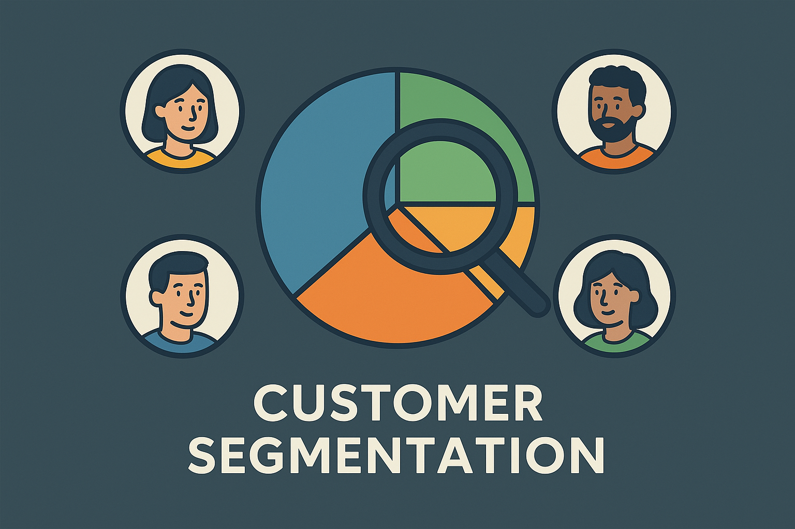

This project contains a Power BI dashboard created using survey data from data professionals. The project was designed to provide insights into various aspects of the data profession, including job roles, skills, and industry trends based on real-world survey responses.

Explore my Tableau projects, where I bring data to life through data visualization. Each project reflects my passion for turning complex information into simple, actionable insights whether it’s tracking sales performance, understanding customer behavior, or uncovering business opportunities.

In this project, I explored patterns and trends in Christmas movies using Python in Jupyter Notebooks. I analyzed data such as movie ratings, release years, genres, and audience reception to uncover insights about holiday film popularity and viewer preferences.
This project provides an in-depth analysis of the IMDb movie dataset, including details such as ratings, genres, release years, budgets, box office earnings, and more. The dataset offers rich insights into trends across the film industry, such as movie popularity, genre distribution, and financial performance.
This Project contains a Power BI dashboard built to analyze and visualize Christmas sales data and trends over time. The dashboard explores various metrics, including sales performance, product categories, and customer behavior during the holiday season.
This project analyzes global malaria data using R and ggplot2. It processes and visualizes WHO datasets to track incidence and mortality trends over time. The analysis creates detailed chloropleth maps, time-series line charts, and comparative bar plots to highlight regional burdens. The code is built with the Tidyverse ecosystem, including dplyr for manipulation and ggplot2 for precise, publication-quality graphics.